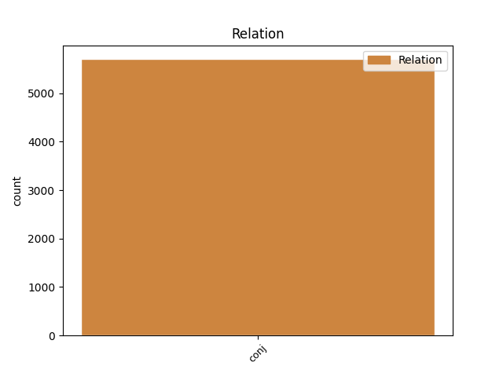
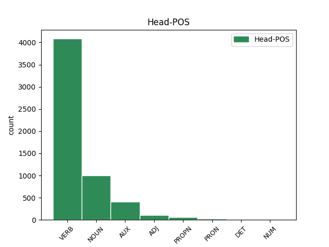
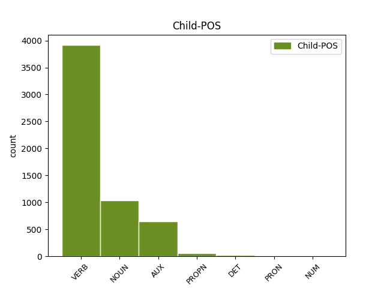

Distribution of features within this leaf



Agreement Rules sorted by frequency.
- When the dependent token is the conjunct(conj) of the head token, and the dependent token is VERB.
1 Když _ _ _ _ 0 _ _ _
2 oslava _ _ _ _ 0 _ _ _
3 skončila _ _ _ _ 0 _ _ _
4 a _ _ _ _ 0 _ _ _
5 s _ _ _ _ 0 _ _ _
6 nadcházejícím _ _ _ _ 0 _ _ _
7 víkendem _ _ _ _ 0 _ _ _
8 se _ _ _ _ 0 _ _ _
9 budova _ _ _ _ 0 _ _ _
10 vyprázdnila _ _ _ _ 0 _ _ _
11 , _ _ _ _ 0 _ _ _
12 vyndal vyndat VERB VpMS----R-AA--- Animacy=Anim|Gender=Masc|Number=Sing|Polarity=Pos|Tense=Past|VerbForm=Part|Voice=Act 0 _ _ _
13 otec _ _ _ _ 0 _ _ _
14 ze _ _ _ _ 0 _ _ _
15 svého _ _ _ _ 0 _ _ _
16 svazku _ _ _ _ 0 _ _ _
17 jeden _ _ _ _ 0 _ _ _
18 nenápadný _ _ _ _ 0 _ _ _
19 klíček _ _ _ _ 0 _ _ _
20 a _ _ _ _ 0 _ _ _
21 řekl říci VERB VpMS----R-AA--- Animacy=Anim|Gender=Masc|Number=Sing|Polarity=Pos|Tense=Past|VerbForm=Part|Voice=Act 12 conj _ SpaceAfter=No
22 : _ _ _ _ 0 _ _ _
1 Aby _ _ _ _ 0 _ _ _
2 bys _ _ _ _ 0 _ _ _
3 toto _ _ _ _ 0 _ _ _
4 břímě _ _ _ _ 0 _ _ _
5 a _ _ _ _ 0 _ _ _
6 zodpovědnost _ _ _ _ 0 _ _ _
7 unesl _ _ _ _ 0 _ _ _
8 , _ _ _ _ 0 _ _ _
9 chci _ _ _ _ 0 _ _ _
10 ti _ _ _ _ 0 _ _ _
11 dát _ _ _ _ 0 _ _ _
12 i _ _ _ _ 0 _ _ _
13 tento _ _ _ _ 0 _ _ _
14 klíč _ _ _ _ 0 _ _ _
15 a _ _ _ _ 0 _ _ _
16 svěřit _ _ _ _ 0 _ _ _
17 tajemství _ _ _ _ 0 _ _ _
18 své _ _ _ _ 0 _ _ _
19 energie energie NOUN NNFS2-----A---- Case=Gen|Gender=Fem|Number=Sing|Polarity=Pos 0 _ _ _
20 a _ _ _ _ 0 _ _ _
21 úspěchu úspěch NOUN NNIS2-----A---- Animacy=Inan|Case=Gen|Gender=Masc|Number=Sing|Polarity=Pos 19 conj _ SpaceAfter=No
22 . _ _ _ _ 0 _ _ _
23 " _ _ _ _ 0 _ _ _
1 Byl _ _ _ _ 0 _ _ _
2 přesvědčen _ _ _ _ 0 _ _ _
3 o _ _ _ _ 0 _ _ _
4 tom _ _ _ _ 0 _ _ _
5 , _ _ _ _ 0 _ _ _
6 že _ _ _ _ 0 _ _ _
7 po _ _ _ _ 0 _ _ _
8 jeho _ _ _ _ 0 _ _ _
9 smrti _ _ _ _ 0 _ _ _
10 syn _ _ _ _ 0 _ _ _
11 dědictví _ _ _ _ 0 _ _ _
12 rychle _ _ _ _ 0 _ _ _
13 rozhází rozházet VERB VB-S---3P-AA--- Mood=Ind|Number=Sing|Person=3|Polarity=Pos|Tense=Pres|VerbForm=Fin|Voice=Act 0 _ _ _
14 a _ _ _ _ 0 _ _ _
15 pak _ _ _ _ 0 _ _ _
16 se _ _ _ _ 0 _ _ _
17 bude být AUX VB-S---3F-AA--- Mood=Ind|Number=Sing|Person=3|Polarity=Pos|Tense=Fut|VerbForm=Fin|Voice=Act 13 conj _ _
18 protloukat _ _ _ _ 0 _ _ _
19 životem _ _ _ _ 0 _ _ _
20 v _ _ _ _ 0 _ _ _
21 bídě _ _ _ _ 0 _ _ _
22 a _ _ _ _ 0 _ _ _
23 opovržení _ _ _ _ 0 _ _ _
24 . _ _ _ _ 0 _ _ _
1 Kořeny _ _ _ _ 0 _ _ _
2 těchto _ _ _ _ 0 _ _ _
3 příběhů _ _ _ _ 0 _ _ _
4 sahají _ _ _ _ 0 _ _ _
5 až _ _ _ _ 0 _ _ _
6 k _ _ _ _ 0 _ _ _
7 předbudhistickým _ _ _ _ 0 _ _ _
8 časům _ _ _ _ 0 _ _ _
9 Indie _ _ _ _ 0 _ _ _
10 , _ _ _ _ 0 _ _ _
11 starověké _ _ _ _ 0 _ _ _
12 Číny Čína PROPN NNFS2-----A---- Case=Gen|Gender=Fem|NameType=Geo|Number=Sing|Polarity=Pos 0 _ _ _
13 , _ _ _ _ 0 _ _ _
14 Japonska Japonsko PROPN NNNS2-----A---- Case=Gen|Gender=Neut|Number=Sing|Polarity=Pos 12 conj _ _
15 a _ _ _ _ 0 _ _ _
16 k _ _ _ _ 0 _ _ _
17 zemím _ _ _ _ 0 _ _ _
18 raného _ _ _ _ 0 _ _ _
19 islámu _ _ _ _ 0 _ _ _
20 a _ _ _ _ 0 _ _ _
21 židovství _ _ _ _ 0 _ _ _
22 . _ _ _ _ 0 _ _ _
1 Kriticky _ _ _ _ 0 _ _ _
2 zkoumal _ _ _ _ 0 _ _ _
3 toho ten DET PDMS4---------- Animacy=Anim|Case=Acc|Gender=Masc|Number=Sing|PronType=Dem 0 _ _ _
4 a _ _ _ _ 0 _ _ _
5 onoho onen DET PDMS4---------- Animacy=Anim|Case=Acc|Gender=Masc|Number=Sing|PronType=Dem 3 conj _ SpaceAfter=No
6 , _ _ _ _ 0 _ _ _
7 ale _ _ _ _ 0 _ _ _
8 pořád _ _ _ _ 0 _ _ _
9 se _ _ _ _ 0 _ _ _
10 mu _ _ _ _ 0 _ _ _
11 něco _ _ _ _ 0 _ _ _
12 nezdálo _ _ _ _ 0 _ _ _
13 , _ _ _ _ 0 _ _ _
14 až _ _ _ _ 0 _ _ _
15 jeho _ _ _ _ 0 _ _ _
16 zrak _ _ _ _ 0 _ _ _
17 padl _ _ _ _ 0 _ _ _
18 na _ _ _ _ 0 _ _ _
19 obrovského _ _ _ _ 0 _ _ _
20 mladíka _ _ _ _ 0 _ _ _
21 . _ _ _ _ 0 _ _ _
1 Tatínek tatínek NOUN NNMS1-----A---- Animacy=Anim|Case=Nom|Gender=Masc|Number=Sing|Polarity=Pos 0 _ _ _
2 a _ _ _ _ 0 _ _ _
3 ty ty PRON PP-S1--2------- Case=Nom|Number=Sing|Person=2|PronType=Prs 1 conj _ _
4 jste _ _ _ _ 0 _ _ _
5 spolu _ _ _ _ 0 _ _ _
6 přece _ _ _ _ 0 _ _ _
7 tak _ _ _ _ 0 _ _ _
8 šťastni _ _ _ _ 0 _ _ _
9 a _ _ _ _ 0 _ _ _
10 také _ _ _ _ 0 _ _ _
11 jste _ _ _ _ 0 _ _ _
12 to _ _ _ _ 0 _ _ _
13 neměli _ _ _ _ 0 _ _ _
14 zrovna _ _ _ _ 0 _ _ _
15 lehké _ _ _ _ 0 _ _ _
16 . _ _ _ _ 0 _ _ _
1 " _ _ _ _ 0 _ _ _
2 To _ _ _ _ 0 _ _ _
3 je _ _ _ _ 0 _ _ _
4 všechno _ _ _ _ 0 _ _ _
5 pravda _ _ _ _ 0 _ _ _
6 , _ _ _ _ 0 _ _ _
7 " _ _ _ _ 0 _ _ _
8 odpověděl _ _ _ _ 0 _ _ _
9 kupec _ _ _ _ 0 _ _ _
10 , _ _ _ _ 0 _ _ _
11 " _ _ _ _ 0 _ _ _
12 ale _ _ _ _ 0 _ _ _
13 nemůžu _ _ _ _ 0 _ _ _
14 podstoupit _ _ _ _ 0 _ _ _
15 riziko _ _ _ _ 0 _ _ _
16 , _ _ _ _ 0 _ _ _
17 že _ _ _ _ 0 _ _ _
18 mě _ _ _ _ 0 _ _ _
19 někdy _ _ _ _ 0 _ _ _
20 přepadne _ _ _ _ 0 _ _ _
21 dvacet dvacet NUM Cn-S1---------- Case=Nom|Number=Sing|NumForm=Word|NumType=Card 0 _ _ _
22 nebo _ _ _ _ 0 _ _ _
23 třicet třicet NUM Cn-S1---------- Case=Nom|Number=Sing|NumForm=Word|NumType=Card 21 conj _ _
24 chlapů _ _ _ _ 0 _ _ _
25 a _ _ _ _ 0 _ _ _
26 bude _ _ _ _ 0 _ _ _
27 mě _ _ _ _ 0 _ _ _
28 chránit _ _ _ _ 0 _ _ _
29 ten _ _ _ _ 0 _ _ _
30 , _ _ _ _ 0 _ _ _
31 kdo _ _ _ _ 0 _ _ _
32 reaguje _ _ _ _ 0 _ _ _
33 až _ _ _ _ 0 _ _ _
34 na _ _ _ _ 0 _ _ _
35 čtyřicátého _ _ _ _ 0 _ _ _
36 ! _ _ _ _ 0 _ _ _
37 " _ _ _ _ 0 _ _ _
Disagree Examples:
1 " _ _ _ _ 0 _ _ _
2 Snad _ _ _ _ 0 _ _ _
3 si _ _ _ _ 0 _ _ _
4 říkáte říkat VERB VB-P---2P-AA--- Mood=Ind|Number=Plur|Person=2|Polarity=Pos|Tense=Pres|VerbForm=Fin|Voice=Act 0 _ _ _
5 - _ _ _ _ 0 _ _ _
6 ta _ _ _ _ 0 _ _ _
7 bude _ _ _ _ 0 _ _ _
8 mít _ _ _ _ 0 _ _ _
9 hodně _ _ _ _ 0 _ _ _
10 pěkných _ _ _ _ 0 _ _ _
11 šperků _ _ _ _ 0 _ _ _
12 , _ _ _ _ 0 _ _ _
13 " _ _ _ _ 0 _ _ _
14 usmála usmát VERB VpFS----R-AA--- Gender=Fem|Number=Sing|Polarity=Pos|Tense=Past|VerbForm=Part|Voice=Act 4 conj _ _
15 se _ _ _ _ 0 _ _ _
16 na _ _ _ _ 0 _ _ _
17 mě _ _ _ _ 0 _ _ _
18 . _ _ _ _ 0 _ _ _
1 Seznam _ _ _ _ 0 _ _ _
2 rostl růst VERB VpIS----R-AA--- Animacy=Inan|Gender=Masc|Number=Sing|Polarity=Pos|Tense=Past|VerbForm=Part|Voice=Act 0 _ _ _
3 - _ _ _ _ 0 _ _ _
4 těch _ _ _ _ 0 _ _ _
5 věcí věc NOUN NNFP2-----A---- Case=Gen|Gender=Fem|Number=Plur|Polarity=Pos 2 conj _ SpaceAfter=No
6 , _ _ _ _ 0 _ _ _
7 které _ _ _ _ 0 _ _ _
8 jsem _ _ _ _ 0 _ _ _
9 ještě _ _ _ _ 0 _ _ _
10 nestačil _ _ _ _ 0 _ _ _
11 nebo _ _ _ _ 0 _ _ _
12 nesplnil _ _ _ _ 0 _ _ _
13 ! _ _ _ _ 0 _ _ _
1 " _ _ _ _ 0 _ _ _
2 Ani _ _ _ _ 0 _ _ _
3 číst _ _ _ _ 0 _ _ _
4 nejdou _ _ _ _ 0 _ _ _
5 , _ _ _ _ 0 _ _ _
6 " _ _ _ _ 0 _ _ _
7 usmála _ _ _ _ 0 _ _ _
8 se _ _ _ _ 0 _ _ _
9 babička _ _ _ _ 0 _ _ _
10 , _ _ _ _ 0 _ _ _
11 " _ _ _ _ 0 _ _ _
12 jen _ _ _ _ 0 _ _ _
13 semtam _ _ _ _ 0 _ _ _
14 vyluštíte vyluštit VERB VB-P---2P-AA--- Mood=Ind|Number=Plur|Person=2|Polarity=Pos|Tense=Pres|VerbForm=Fin|Voice=Act 0 _ _ _
15 nějaké _ _ _ _ 0 _ _ _
16 slovo _ _ _ _ 0 _ _ _
17 , _ _ _ _ 0 _ _ _
18 sama _ _ _ _ 0 _ _ _
19 jsem být AUX VB-S---1P-AA--- Mood=Ind|Number=Sing|Person=1|Polarity=Pos|Tense=Pres|VerbForm=Fin|Voice=Act 14 conj _ _
20 je _ _ _ _ 0 _ _ _
21 jednou _ _ _ _ 0 _ _ _
22 zkoušela _ _ _ _ 0 _ _ _
23 číst _ _ _ _ 0 _ _ _
24 , _ _ _ _ 0 _ _ _
25 ale _ _ _ _ 0 _ _ _
26 nešlo _ _ _ _ 0 _ _ _
27 to _ _ _ _ 0 _ _ _
28 . _ _ _ _ 0 _ _ _
29 " _ _ _ _ 0 _ _ _
1 Otec _ _ _ _ 0 _ _ _
2 rukoval rukovat VERB VpMS----R-AA--- Animacy=Anim|Gender=Masc|Number=Sing|Polarity=Pos|Tense=Past|VerbForm=Part|Voice=Act 0 _ _ _
3 deset _ _ _ _ 0 _ _ _
4 dní _ _ _ _ 0 _ _ _
5 po _ _ _ _ 0 _ _ _
6 svatbě _ _ _ _ 0 _ _ _
7 , _ _ _ _ 0 _ _ _
8 a _ _ _ _ 0 _ _ _
9 tak _ _ _ _ 0 _ _ _
10 si _ _ _ _ 0 _ _ _
11 s _ _ _ _ 0 _ _ _
12 matkou _ _ _ _ 0 _ _ _
13 ještě _ _ _ _ 0 _ _ _
14 neměli mít VERB VpMP----R-NA--- Animacy=Anim|Gender=Masc|Number=Plur|Polarity=Neg|Tense=Past|VerbForm=Part|Voice=Act 2 conj _ _
15 čas _ _ _ _ 0 _ _ _
16 zevšednět _ _ _ _ 0 _ _ _
17 . _ _ _ _ 0 _ _ _
1 Milovaly milovat VERB VpFP----R-AA--- Gender=Fem|Number=Plur|Polarity=Pos|Tense=Past|VerbForm=Part|Voice=Act 0 _ _ _
2 matku _ _ _ _ 0 _ _ _
3 a _ _ _ _ 0 _ _ _
4 ona _ _ _ _ 0 _ _ _
5 jim _ _ _ _ 0 _ _ _
6 odcházela odcházet VERB VpFS----R-AA--- Gender=Fem|Number=Sing|Polarity=Pos|Tense=Past|VerbForm=Part|Voice=Act 1 conj _ SpaceAfter=No
7 . _ _ _ _ 0 _ _ _